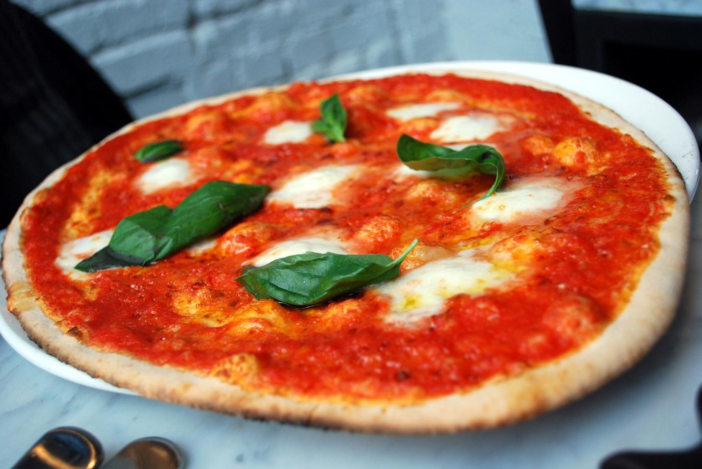

Margherita Pizza

Description
Are you ready for the best Classic Margherita Pizza? This homemade Italian recipe features an easy pizza dough topped with traditional ingredients, including a fresh marinara sauce. It is seriously simple and absolutely delicious!
Ingredients
- Homemade pizza dough
- Homemade marinara sauce
- Tomatoes
- Fresh mozzarella cheese
- Fresh basil
- Garlic
- Extra virgin olive oil
Directions
- Place a pizza stone in the oven. Preheat the oven to 500 degrees F, allowing the stone to get hot.
- Shape the pizza dough on a floured surface into an 8-inch round, making it 1/4-inch thick. Transfer it to a pizza peel lined with parchment paper. Reshape if necessary.
- Gently brush the dough with the olive oil, then evenly spread the marinara sauce on, leaving a 1-inch border around the edge. Sprinkle the garlic over the top. Top with the mozzarella slices and tomatoes, leaving space in between.
- Slide the parchment with the crust onto the heated stone. Bake for 8-10 minutes until crust is golden and cheese is melted and bubbly.
- Remove from oven and sprinkle the basil over the top, along with 1-2 grinds of fresh black pepper.
- Cut into wedges and serve immediately.